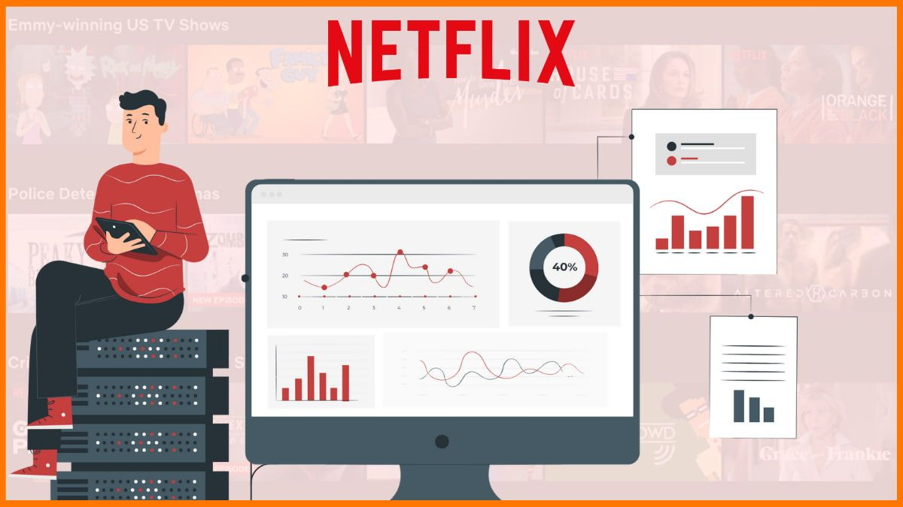

Selected Projects
A mix of academic and personal work — graph neural networks, NLP, network analysis, and predictive maintenance. Each card links to the full report.
Skeleton-based Action Recognition System
 My MSc dissertation. I compared two graph convolutional network architectures — Shift GCN and Channel-wise Topology GCN — on skeleton-based action recognition across three large-scale datasets (NTU-RGB+D 60, NTU-RGB+D 120, and Kinetics-Skeleton). I proposed a hybrid variant that outperformed both baselines and reached state-of-the-art on the benchmark I focused on. The project deepened my grasp of computer vision, spatial-temporal modelling, and GNNs on real-world video data.
My MSc dissertation. I compared two graph convolutional network architectures — Shift GCN and Channel-wise Topology GCN — on skeleton-based action recognition across three large-scale datasets (NTU-RGB+D 60, NTU-RGB+D 120, and Kinetics-Skeleton). I proposed a hybrid variant that outperformed both baselines and reached state-of-the-art on the benchmark I focused on. The project deepened my grasp of computer vision, spatial-temporal modelling, and GNNs on real-world video data.
Tech: Python · PyTorch · Computer Vision · GCN · Deep Learning
Twitter (now X) Data Analysis
I scraped a month of tweets (June 2021) from the European region and ran statistical and exploratory analysis to identify the busiest and quietest tweet days and locations, active vs inactive users, peak activity windows, and likely bot accounts. Findings were cross-verified against public data before publishing.
Tech: Python · Web scraping · Exploratory data analysis · Data visualisation · Bot detection
Comedy Show Recommendation System

Tech: Python · NLP · Network analysis · Recommendation systems · Machine learning
NASA Aircraft Engine Analysis
I predicted the Remaining Useful Life (RUL) of aircraft engines using the NASA C-MAPSS dataset, benchmarking KNN, Naïve Bayes, Random Forest, and SVM under both regression and classification framings. I deliberately biased evaluation toward low-RUL accuracy — because late warnings are expensive and early ones aren't. The write-up doubles as a reference for anyone building a predictive maintenance model on time-to-failure data.
Tech: Python · Machine learning · Predictive maintenance · Regression · Classification
Indian Prime Minister's COVID Speech Analysis
I analysed the Indian Prime Minister's public addresses during the COVID-19 pandemic using NLP and network methods — word-clouds, similarity, sentiment, and centrality — then cross-checked the emergent narrative against actual case data to see where messaging led, lagged, or matched reality. Structured as three parts: data cleaning, NLP, and network analysis.
Tech: Python · NLP · Sentiment analysis · Network analysis · Time series